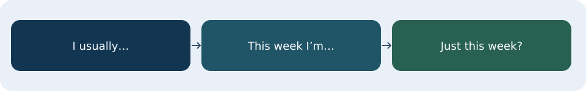
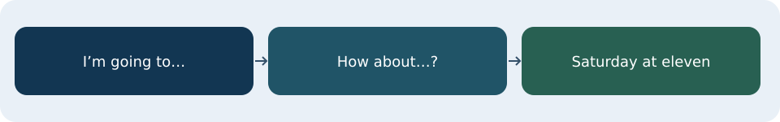
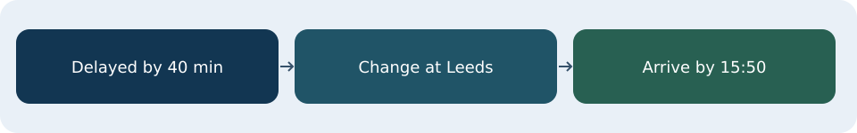
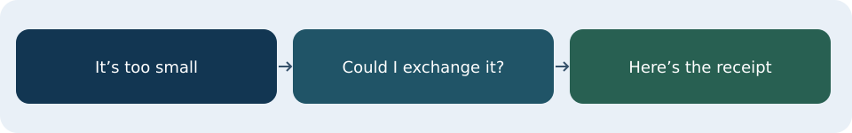
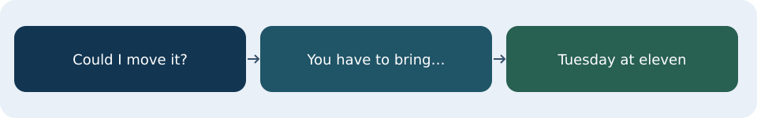
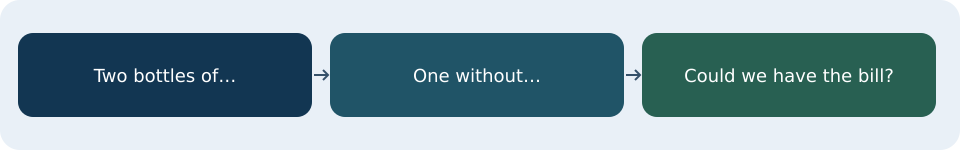
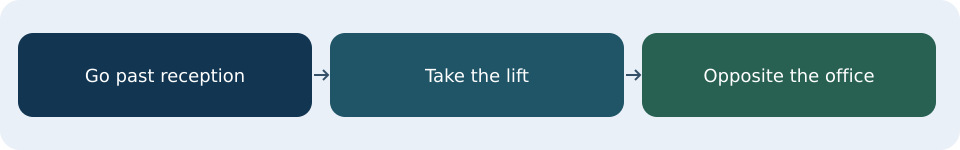
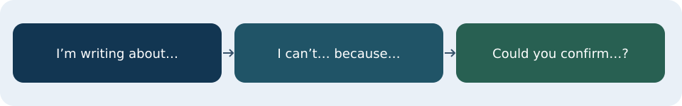
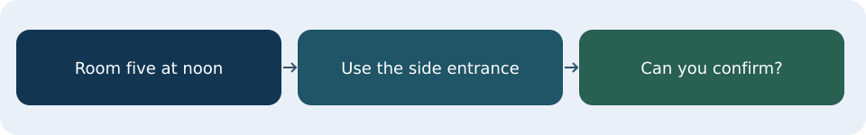

Objetivo general del curso Resolver intercambios sencillos sobre experiencias, planes y servicios, extrayendo datos de audios y textos breves y confirmando acuerdos en inglés.
Requisitos de entrada A1 consolidado. Puede presentarse, decir qué necesita, responder a preguntas breves e identificar números y horas.
Docente Rubén Muñoz Valadés
Escucha sin mirar el texto, escucha otra vez para apuntar datos y abre la transcripción para comprobar. Repite la frase, modifica un dato y recupera la respuesta sin apoyo. Los diálogos usan dos voces sintéticas estadounidenses. Las situaciones, datos y empresas son ficticios.
1. Hábitos y cambios temporales
Objetivo general de la unidad Presentarse en una actividad nueva y comparar una costumbre habitual con una situación temporal.
Temporalización 300 min en dos sesiones, según la programación.

Modelo de tres pasos. Lee de izquierda a derecha y sustituye un dato por otro de tu contexto.
Presente simple para hábitos
Usa normalmente el sujeto y el verbo en forma base. Con she o he añade -s. Los adverbios como usually van antes del verbo principal. Usa do o does para preguntar.
I usually work from home on Fridays. / Does Marta work near here?
Presente continuo para cambios temporales
Forma am, is o are más el verbo en -ing. Señales como this week o at the moment ayudan, aunque el contexto decide. I work from home describe un hábito, I’m working from home today indica la excepción.
This week I’m helping at the front desk.
Preguntar y aclarar
Para mostrar interés, pregunta por una cosa cada vez. Si un dato queda incompleto, recupera la parte útil con una pregunta breve.
Where do you normally work? / Do you mean this week only?
Vocabulario de la unidad
usually
normalmente
shift
turno
at the moment
en este momento
front desk
recepción
Comprensión y práctica oral
Escucha una vez y escribe quién habla y qué necesita. A la segunda, apunta dos datos de la conversación. Contrástalos con la transcripción. Después reproduce una frase, pausa y respóndela con un cambio de persona, fecha o lugar aplicable al caso. Haz tres rondas con notas, sin notas y con un dato sorpresa.
Preguntas de escucha ¿Dónde trabaja normalmente Nia? ¿Dónde trabaja esta semana?
Diálogo de la unidad
Practicar con el micrófono
Escucha el modelo y repite. El resultado compara la transcripción del navegador con el modelo. Escucha el audio para practicar los sonidos y el ritmo.
El curso no graba tu voz. Tu navegador puede usar un servicio externo de reconocimiento.
El navegador oyó
Leer la transcripción
AHi, I’m Nia. I usually work in the library, but this week I’m helping at the front desk.
BNice to meet you. Do you normally start at nine?
AYes, but today I’m starting at ten because the centre opens late.
BJust today, then? I’ll meet you at ten by the main door.
Lectura aplicada
Welcome to the community centre. Staff usually arrive at nine on Tuesdays. This Tuesday, the main hall opens an hour later because a new desk is being installed. The morning team should meet Nia at the main door at ten. The other rooms will open at their usual times.
Comprueba lo que has entendido ¿Cuál es la hora habitual y qué cambia este martes?
Caso guiado resuelto
Objetivo Presentarse en una actividad nueva y comparar una costumbre habitual con una situación temporal.
Tiempo y material 30 min · enunciado, glosario y cuaderno.
Enunciado Una compañera suele atender en la biblioteca a las 9. Hoy trabaja en recepción y empieza a las 10. Envía un mensaje a quien la sustituye.
Anota en dos columnas lo habitual (biblioteca, 9) y lo que ocurre hoy (recepción, 10).
Escribe la primera frase con usually y el presente simple.
Empieza la segunda con today y usa is working para el cambio temporal.
Relee tu mensaje. La compañera debe localizar el puesto y saber a qué hora empieza hoy sin hacer otra pregunta.
Resultado esperado y criterios Presentarse en una actividad nueva y comparar una costumbre habitual con una situación temporal.
Modelo resuelto
I usually work in the library at nine. Today I’m working at the front desk from ten. Can you meet me at ten by the main door?
Práctica individual
Objetivo Respuesta comprensible que conserva los datos de la consigna y usa dos expresiones trabajadas.
Tiempo y material 35 min · cuaderno y cronómetro.
Enunciado Redacta tu perfil habitual y una excepción temporal por obras.
Prepara un borrador siguiendo la consigna.
Lee tu respuesta en voz alta y comprueba que satisface cada requisito.
Cambia un dato concreto y revisa qué parte de tu respuesta debe adaptarse.
Resultado esperado y criterios Respuesta comprensible que conserva los datos de la consigna y usa dos expresiones trabajadas.
Simulación y dinámica en parejas
Objetivo Los dos papeles intervienen, comprueban un dato y cierran con una decisión entendida por ambas personas.
Tiempo y material 35 min · dos tarjetas y hoja de observación.
Enunciado Una persona pregunta por la rutina. La otra recibe el dato de que la reunión se mueve del lunes al martes y debe confirmar.
Repartid los papeles y preparad la información por separado.
Haced una primera ronda y pedid una aclaración antes de decidir.
Intercambiad papeles y modificad un dato.
Comparad las decisiones y repetid el turno que produjo dudas.
Resultado esperado y criterios Los dos papeles intervienen, comprueban un dato y cierran con una decisión entendida por ambas personas.
Reto de refuerzo
Objetivo Corrección explicada y aplicación del mismo patrón en un ejemplo nuevo.
Tiempo y material 25 min · ficha y notas.
Enunciado Corrige «She usually start at nine» y «This week she helping at reception».
Detecta qué se debe cambiar.
Escribe la corrección y justifícala con el ejemplo de la unidad.
Crea otro enunciado con la misma dificultad e intercámbialo para comprobarlo.
Resultado esperado y criterios Corrección explicada y aplicación del mismo patrón en un ejemplo nuevo.
Autoevaluación
Una opción por pregunta. El umbral es 4/5. Si fallas, estudia la explicación y vuelve a intentar la tarea con un dato diferente antes de repetir el control.
Resumen de lo aprendido en la unidad
Usa presente simple para lo habitual y be + -ing para una excepción temporal. Termina confirmando qué cambia y durante cuánto tiempo.
2. Contar lo que pasó
Objetivo general de la unidad Narrar un incidente cotidiano en pasado y preguntar por sus datos esenciales.
Temporalización 300 min en dos sesiones, según la programación.
Modelo de tres pasos. Lee de izquierda a derecha y sustituye un dato por otro de tu contexto.
Pasado simple en afirmativa
Añade -ed a muchos verbos regulares. Aprende los irregulares por parejas de significado y uso, como go/went o lose/lost. Una expresión temporal como last Saturday coloca toda la escena en pasado.
Last Saturday I went to Bristol and lost my wallet.
Preguntas y negativas
Did ya lleva el pasado. Después de did o didn’t se usa la forma base. Where did you leave it? busca lugar. When did you lose it? busca momento.
I didn’t leave it on the train. / Did you check the café?
Orden de hechos
Usa first, then, after that y finally. Organiza hechos verificables antes de añadir una impresión. Si no sabes el lugar, di I think + oración.
First I paid for lunch. Then I caught the bus. I think I left my wallet at the café.
Vocabulario de la unidad
wallet
cartera
lost property
objetos perdidos
leave
dejar
receipt
recibo
Comprensión y práctica oral
Escucha una vez y escribe quién habla y qué necesita. A la segunda, apunta dos datos de la conversación. Contrástalos con la transcripción. Después reproduce una frase, pausa y respóndela con un cambio de persona, fecha o lugar aplicable al caso. Haz tres rondas con notas, sin notas y con un dato sorpresa.
Preguntas de escucha ¿A qué hora compró el café? ¿De qué color era la cartera encontrada?
Diálogo de la unidad
Practicar con el micrófono
Escucha el modelo y repite. El resultado compara la transcripción del navegador con el modelo. Escucha el audio para practicar los sonidos y el ritmo.
El curso no graba tu voz. Tu navegador puede usar un servicio externo de reconocimiento.
El navegador oyó
Leer la transcripción
AI lost my wallet on Saturday. I think I left it at the station café.
BWhat time did you buy your coffee?
AAt about one. I paid in cash and then I took the bus.
BWe found a blue wallet under a table. Can you describe yours?
Lectura aplicada
Lost property notice. On Saturday afternoon a member of staff found a blue wallet under a table in the station café. The owner should contact the station office before six on weekdays. To collect it, describe the wallet and say where you last used it. Please bring some identification.
Comprueba lo que has entendido ¿Dónde apareció la cartera y qué debe hacer la persona para recogerla?
Caso guiado resuelto
Objetivo Narrar un incidente cotidiano en pasado y preguntar por sus datos esenciales.
Tiempo y material 30 min · enunciado, glosario y cuaderno.
Enunciado La mochila apareció en el autobús. Escribe un relato de tres pasos y una pregunta para la oficina.
Ordena tres momentos: perder, buscar y recuperar la mochila.
Elige un verbo de pasado para cada momento, por ejemplo lost, checked y found.
Une los pasos con first, then y finally y añade una pregunta con did más verbo en forma base.
Comprueba que tu relato explica dónde apareció y que la última línea solicita un dato concreto.
Resultado esperado y criterios Narrar un incidente cotidiano en pasado y preguntar por sus datos esenciales.
Modelo resuelto
First I got on the bus at two. Then I sat near the door. I left my bag under the seat. Did anyone find it?
Práctica individual
Objetivo Respuesta comprensible que conserva los datos de la consigna y usa dos expresiones trabajadas.
Tiempo y material 35 min · cuaderno y cronómetro.
Enunciado Narra cuándo perdiste una llave y dos lugares que comprobaste.
Prepara un borrador siguiendo la consigna.
Lee tu respuesta en voz alta y comprueba que satisface cada requisito.
Cambia un dato concreto y revisa qué parte de tu respuesta debe adaptarse.
Resultado esperado y criterios Respuesta comprensible que conserva los datos de la consigna y usa dos expresiones trabajadas.
Simulación y dinámica en parejas
Objetivo Los dos papeles intervienen, comprueban un dato y cierran con una decisión entendida por ambas personas.
Tiempo y material 35 min · dos tarjetas y hoja de observación.
Enunciado Cliente y oficina de objetos perdidos. Confirmad objeto, lugar, momento y próximo paso.
Repartid los papeles y preparad la información por separado.
Haced una primera ronda y pedid una aclaración antes de decidir.
Intercambiad papeles y modificad un dato.
Comparad las decisiones y repetid el turno que produjo dudas.
Resultado esperado y criterios Los dos papeles intervienen, comprueban un dato y cierran con una decisión entendida por ambas personas.
Reto de refuerzo
Objetivo Corrección explicada y aplicación del mismo patrón en un ejemplo nuevo.
Tiempo y material 25 min · ficha y notas.
Enunciado Corrige «Where did you left it?» y «I didn’t found it».
Detecta qué se debe cambiar.
Escribe la corrección y justifícala con el ejemplo de la unidad.
Crea otro enunciado con la misma dificultad e intercámbialo para comprobarlo.
Resultado esperado y criterios Corrección explicada y aplicación del mismo patrón en un ejemplo nuevo.
Autoevaluación
Una opción por pregunta. El umbral es 4/5. Si fallas, estudia la explicación y vuelve a intentar la tarea con un dato diferente antes de repetir el control.
Resumen de lo aprendido en la unidad
Relata hechos pasados en orden y usa did o didn’t con el verbo base. Distingue lo que viste de lo que crees que ocurrió.
3. Planes y citas
Objetivo general de la unidad Acordar un plan y confirmar por escrito día, hora y lugar.
Temporalización 300 min en dos sesiones, según la programación.

Modelo de tres pasos. Lee de izquierda a derecha y sustituye un dato por otro de tu contexto.
Intención y cita acordada
Usa be going to + verbo para una intención. Para un acuerdo con fecha o persona usa presente continuo. Una misma situación puede admitir ambos enfoques según el mensaje.
I’m going to take a course. / I’m meeting Sara on Friday at six.
Propuestas y alternativas
Are you free on Friday? abre la negociación. How about + -ing propone una acción. Si no puedes, di cuándo puedes y ofrece un lugar concreto.
How about meeting at the library? / I can’t do Friday, but Saturday works for me.
Precisión con tiempo y lugar
Usa on con días, at con horas y near u outside para aclarar un punto de encuentro. En el mensaje final vuelve a escribir los datos importantes.
Let’s meet on Saturday at half past eleven outside the library.
Vocabulario de la unidad
free
disponible
arrangement
acuerdo
reschedule
reprogramar
outside
fuera de
Comprensión y práctica oral
Escucha una vez y escribe quién habla y qué necesita. A la segunda, apunta dos datos de la conversación. Contrástalos con la transcripción. Después reproduce una frase, pausa y respóndela con un cambio de persona, fecha o lugar aplicable al caso. Haz tres rondas con notas, sin notas y con un dato sorpresa.
Preguntas de escucha ¿Qué día rechaza la otra persona y dónde quedan al final?
Diálogo de la unidad
Practicar con el micrófono
Escucha el modelo y repite. El resultado compara la transcripción del navegador con el modelo. Escucha el audio para practicar los sonidos y el ritmo.
El curso no graba tu voz. Tu navegador puede usar un servicio externo de reconocimiento.
El navegador oyó
Leer la transcripción
AI’m going to visit the book fair. Are you free on Friday?
BI can’t do Friday. How about going on Saturday morning?
AThat works for me. I’m meeting Dani at the library at eleven.
BLet’s meet outside the fair at half past eleven, then.
Lectura aplicada
The book fair runs from Friday to Sunday at Mill Hall. On Saturday, the doors open at eleven and the first workshop begins at noon. Entry to the fair is free. Book the workshop in advance if you want a seat. The hall is opposite the library entrance.
Comprueba lo que has entendido ¿Qué es gratuito y qué hay que reservar?
Caso guiado resuelto
Objetivo Acordar un plan y confirmar por escrito día, hora y lugar.
Tiempo y material 30 min · enunciado, glosario y cuaderno.
Enunciado Tu compañera no puede el jueves. Ofrece viernes a las 18:00 junto a la sala 3 y confirma.
Rechaza el jueves con una frase breve y amable.
Propón Friday at six y explica el punto de encuentro con next to Room 3.
Pregunta si la hora le va bien. Cuando acepte, repite juntos día, hora y lugar.
Ensaya con otra persona que te propone ir a una sala diferente y confirma el dato que cambia.
Resultado esperado y criterios Acordar un plan y confirmar por escrito día, hora y lugar.
Modelo resuelto
Friday works for me. Let’s meet by room three at six p.m. See you there!
Práctica individual
Objetivo Respuesta comprensible que conserva los datos de la consigna y usa dos expresiones trabajadas.
Tiempo y material 35 min · cuaderno y cronómetro.
Enunciado Convierte una intención sin fecha en un acuerdo con alguien y envíale una confirmación.
Prepara un borrador siguiendo la consigna.
Lee tu respuesta en voz alta y comprueba que satisface cada requisito.
Cambia un dato concreto y revisa qué parte de tu respuesta debe adaptarse.
Resultado esperado y criterios Respuesta comprensible que conserva los datos de la consigna y usa dos expresiones trabajadas.
Simulación y dinámica en parejas
Objetivo Los dos papeles intervienen, comprueban un dato y cierran con una decisión entendida por ambas personas.
Tiempo y material 35 min · dos tarjetas y hoja de observación.
Enunciado A solo puede a las 17:00. B propone 17:30 porque sale tarde. Pactad hora y lugar sin enseñar la tarjeta.
Repartid los papeles y preparad la información por separado.
Haced una primera ronda y pedid una aclaración antes de decidir.
Intercambiad papeles y modificad un dato.
Comparad las decisiones y repetid el turno que produjo dudas.
Resultado esperado y criterios Los dos papeles intervienen, comprueban un dato y cierran con una decisión entendida por ambas personas.
Reto de refuerzo
Objetivo Corrección explicada y aplicación del mismo patrón en un ejemplo nuevo.
Tiempo y material 25 min · ficha y notas.
Enunciado Corrige «We meeting on Saturday» y «on six p.m.».
Detecta qué se debe cambiar.
Escribe la corrección y justifícala con el ejemplo de la unidad.
Crea otro enunciado con la misma dificultad e intercámbialo para comprobarlo.
Resultado esperado y criterios Corrección explicada y aplicación del mismo patrón en un ejemplo nuevo.
Autoevaluación
Una opción por pregunta. El umbral es 4/5. Si fallas, estudia la explicación y vuelve a intentar la tarea con un dato diferente antes de repetir el control.
Resumen de lo aprendido en la unidad
Distingue intención de cita acordada, negocia un plan alternativo y confirma juntos día, hora y lugar.
4. Viajes y cambios de horario
Objetivo general de la unidad Interpretar un aviso de transporte y elegir una ruta alternativa.
Temporalización 300 min en dos sesiones, según la programación.

Modelo de tres pasos. Lee de izquierda a derecha y sustituye un dato por otro de tu contexto.
Leer lo esencial de un aviso
Localiza origen, destino, hora, andén y tipo de cambio. Delayed conserva el servicio con retraso. Cancelled indica que ese servicio se suprime. Comprueba a qué tren se refiere cada dato.
The 14:20 to York is delayed. The 14:45 is cancelled.
Explorar alternativas
Pide otra ruta con Is there another train? Can I use the same ticket? verifica condiciones. Change at Leeds significa hacer transbordo en Leeds.
You can take the 15:05 and change at Leeds.
Comparativos prácticos
Con adjetivos breves se usa -er, como cheaper o faster. Con muchos largos, more, como more convenient. Than introduce la comparación.
The bus is cheaper than the train, but it takes longer.
Vocabulario de la unidad
platform
andén
delay
retraso
change at
hacer transbordo en
single ticket
billete de ida
Comprensión y práctica oral
Escucha una vez y escribe quién habla y qué necesita. A la segunda, apunta dos datos de la conversación. Contrástalos con la transcripción. Después reproduce una frase, pausa y respóndela con un cambio de persona, fecha o lugar aplicable al caso. Haz tres rondas con notas, sin notas y con un dato sorpresa.
Preguntas de escucha ¿Cuánto se retrasa el tren y desde qué andén sale la alternativa?
Diálogo de la unidad
Practicar con el micrófono
Escucha el modelo y repite. El resultado compara la transcripción del navegador con el modelo. Escucha el audio para practicar los sonidos y el ritmo.
El curso no graba tu voz. Tu navegador puede usar un servicio externo de reconocimiento.
El navegador oyó
Leer la transcripción
AThe two twenty to York is delayed by forty minutes.
BIs there another train? I need to arrive before four.
ATake the two thirty-five and change at Leeds. It leaves from platform six.
BCan I use the same ticket?
AYes, you can.
Lectura aplicada
Travel update. The direct train to York, due to leave at 14:20, is expected to leave at 15:00. Passengers may take the 14:35 from platform six and change at Leeds. This service reaches York at 15:50. Existing tickets are valid on that route today.
Comprueba lo que has entendido Si necesitas llegar antes de las cuatro, ¿qué ruta sirve y cuál es el andén?
Caso guiado resuelto
Objetivo Interpretar un aviso de transporte y elegir una ruta alternativa.
Tiempo y material 30 min · enunciado, glosario y cuaderno.
Enunciado Tu tren directo sale a las 15:00; hay alternativa a las 14:35 desde andén 6. Informa a una amiga de la hora, el cambio y el billete.
Haz una nota de aviso con las dos salidas y el andén de la alternativa.
Abre tu mensaje con el cambio y la nueva hora que importa a la otra persona.
Indica el andén y pregunta si hay que cambiar el billete cuando ese dato sigue sin confirmarse.
Pide a tu compañera que repita hora y andén. Si confunde las opciones, aclara cuál propones.
Resultado esperado y criterios Interpretar un aviso de transporte y elegir una ruta alternativa.
Modelo resuelto
Take the 14:35 from platform six and change at Leeds. It arrives at 15:50. You can use the same ticket.
Práctica individual
Objetivo Respuesta comprensible que conserva los datos de la consigna y usa dos expresiones trabajadas.
Tiempo y material 35 min · cuaderno y cronómetro.
Enunciado Compara bus de £6 que tarda 50 min y tren de £9 que tarda 30 min. Recomienda según prioridad.
Prepara un borrador siguiendo la consigna.
Lee tu respuesta en voz alta y comprueba que satisface cada requisito.
Cambia un dato concreto y revisa qué parte de tu respuesta debe adaptarse.
Resultado esperado y criterios Respuesta comprensible que conserva los datos de la consigna y usa dos expresiones trabajadas.
Simulación y dinámica en parejas
Objetivo Los dos papeles intervienen, comprueban un dato y cierran con una decisión entendida por ambas personas.
Tiempo y material 35 min · dos tarjetas y hoja de observación.
Enunciado Viajera con billete y personal de estación. Uno da el nuevo andén y otro repite el dato antes de marcharse.
Repartid los papeles y preparad la información por separado.
Haced una primera ronda y pedid una aclaración antes de decidir.
Intercambiad papeles y modificad un dato.
Comparad las decisiones y repetid el turno que produjo dudas.
Resultado esperado y criterios Los dos papeles intervienen, comprueban un dato y cierran con una decisión entendida por ambas personas.
Reto de refuerzo
Objetivo Corrección explicada y aplicación del mismo patrón en un ejemplo nuevo.
Tiempo y material 25 min · ficha y notas.
Enunciado Explica la diferencia entre «delayed by ten minutes» y «cancelled».
Detecta qué se debe cambiar.
Escribe la corrección y justifícala con el ejemplo de la unidad.
Crea otro enunciado con la misma dificultad e intercámbialo para comprobarlo.
Resultado esperado y criterios Corrección explicada y aplicación del mismo patrón en un ejemplo nuevo.
Autoevaluación
Una opción por pregunta. El umbral es 4/5. Si fallas, estudia la explicación y vuelve a intentar la tarea con un dato diferente antes de repetir el control.
Resumen de lo aprendido en la unidad
Identifica el servicio afectado. Elige una alternativa por hora de llegada y comprueba andén, transbordo y validez del billete.
5. Compras y devoluciones
Objetivo general de la unidad Pedir un cambio en una tienda y explicar qué resultado aceptarías.
Temporalización 300 min en dos sesiones, según la programación.

Modelo de tres pasos. Lee de izquierda a derecha y sustituye un dato por otro de tu contexto.
Tallas y referencias
Usa this one para un artículo y these para varios. Too small indica que el tamaño es demasiado pequeño, mientras que not big enough indica que falta tamaño. Ambos permiten explicar el motivo.
This one is too small. / These trousers aren’t long enough.
Pedir y responder con cortesía
Could I exchange this? formula una solicitud. Para dar opciones, usa a larger size o a different colour. Refund devuelve el dinero y exchange cambia el artículo.
Could I exchange this jacket for a larger size?
Entender condiciones escritas
Busca plazo, estado del artículo y comprobante. Within 14 days fija un máximo. Conviene indicar compra anterior con bought + referencia al momento.
I bought this on Monday. Here’s the receipt.
Vocabulario de la unidad
refund
reembolso
exchange
cambio
receipt
tique
size
talla
Comprensión y práctica oral
Escucha una vez y escribe quién habla y qué necesita. A la segunda, apunta dos datos de la conversación. Contrástalos con la transcripción. Después reproduce una frase, pausa y respóndela con un cambio de persona, fecha o lugar aplicable al caso. Haz tres rondas con notas, sin notas y con un dato sorpresa.
Preguntas de escucha ¿Qué talla ofrece la tienda? ¿Dónde se prueba?
Diálogo de la unidad
Practicar con el micrófono
Escucha el modelo y repite. El resultado compara la transcripción del navegador con el modelo. Escucha el audio para practicar los sonidos y el ritmo.
El curso no graba tu voz. Tu navegador puede usar un servicio externo de reconocimiento.
El navegador oyó
Leer la transcripción
AI bought this jacket yesterday, but it’s too small.
BDo you have the receipt? We can exchange it for a medium.
AA medium would be great. Can I try it on first?
BOf course. The fitting room is at the back.
Lectura aplicada
Shop policy. You can exchange unused items within fourteen days of purchase. Bring the item and your receipt to the customer service desk. If the right size is unavailable, staff can explain the refund options. Please keep the original labels on the item.
Comprueba lo que has entendido ¿Qué se debe llevar y cuánto tiempo hay para solicitar el cambio?
Caso guiado resuelto
Objetivo Pedir un cambio en una tienda y explicar qué resultado aceptarías.
Tiempo y material 30 min · enunciado, glosario y cuaderno.
Enunciado Compraste una chaqueta S el lunes y necesitas M. Pide el cambio, ofrece el tique y pregunta dónde probarte la talla.
Reúne las palabras jacket, size y receipt y escribe el motivo con too small.
Saluda y explica cuándo compraste la prenda con I bought… on Monday.
Pide talla M, muestra el tique y pregunta por el probador.
Si te ofrecen otra talla, responde si la aceptas y confirma qué vas a probarte.
Resultado esperado y criterios Pedir un cambio en una tienda y explicar qué resultado aceptarías.
Modelo resuelto
I bought this jacket on Monday. Could I exchange it for a medium? Here’s the receipt. Can I try it on?
Práctica individual
Objetivo Respuesta comprensible que conserva los datos de la consigna y usa dos expresiones trabajadas.
Tiempo y material 35 min · cuaderno y cronómetro.
Enunciado Redacta un mensaje si no hay tu talla. Pide información sobre un reembolso.
Prepara un borrador siguiendo la consigna.
Lee tu respuesta en voz alta y comprueba que satisface cada requisito.
Cambia un dato concreto y revisa qué parte de tu respuesta debe adaptarse.
Resultado esperado y criterios Respuesta comprensible que conserva los datos de la consigna y usa dos expresiones trabajadas.
Simulación y dinámica en parejas
Objetivo Los dos papeles intervienen, comprueban un dato y cierran con una decisión entendida por ambas personas.
Tiempo y material 35 min · dos tarjetas y hoja de observación.
Enunciado Dependiente con talla M o alternativa en azul, clienta necesita M y prefiere negro. Pactad una opción y confirmad artículo.
Repartid los papeles y preparad la información por separado.
Haced una primera ronda y pedid una aclaración antes de decidir.
Intercambiad papeles y modificad un dato.
Comparad las decisiones y repetid el turno que produjo dudas.
Resultado esperado y criterios Los dos papeles intervienen, comprueban un dato y cierran con una decisión entendida por ambas personas.
Reto de refuerzo
Objetivo Corrección explicada y aplicación del mismo patrón en un ejemplo nuevo.
Tiempo y material 25 min · ficha y notas.
Enunciado Transforma «It’s too short» en una frase con enough.
Detecta qué se debe cambiar.
Escribe la corrección y justifícala con el ejemplo de la unidad.
Crea otro enunciado con la misma dificultad e intercámbialo para comprobarlo.
Resultado esperado y criterios Corrección explicada y aplicación del mismo patrón en un ejemplo nuevo.
Devolución con una condición imprevista
Objetivo, tiempo y materiales Negociar una solución y confirmar el acuerdo por escrito en 20 min de práctica en pareja. Preparad un tique ficticio y dos tarjetas.
Durante 4 min, la persona compradora lee «blue jacket, S, Monday, £35» y prepara la petición de talla M.
Durante 7 min, el vendedor informa de que no queda la talla M en azul. Ofrece una M verde por el mismo precio o un vale. La persona compradora pregunta por el probador y elige una opción con una razón.
Durante 5 min, redacta una confirmación de 35–50 palabras con la prenda, la opción y el siguiente paso. La otra persona marca los detalles que coinciden con lo acordado.
Durante 4 min, cambiad los roles. La nueva condición es que la otra prenda solo llega el jueves. Acordad una recogida.
Ver un acuerdo posible
Thanks for your help. I'll exchange the blue jacket for a green one in size M, at the same price. I'll try it on now and bring the original receipt to the till.
El acuerdo conserva la talla, el precio y el siguiente paso. La razón puede ser diferente si encaja en la conversación.
Autoevaluación
Una opción por pregunta. El umbral es 4/5. Si fallas, estudia la explicación y vuelve a intentar la tarea con un dato diferente antes de repetir el control.
Resumen de lo aprendido en la unidad
Explica el problema con la talla, usa una petición cortés y comprueba plazo y tique antes de acordar el cambio.
6. Cambiar una cita y pedir ayuda
Objetivo general de la unidad Describir una dificultad sencilla, pedir un cambio y entender instrucciones básicas.
Temporalización 300 min en dos sesiones, según la programación.

Modelo de tres pasos. Lee de izquierda a derecha y sustituye un dato por otro de tu contexto.
Describir sin exagerar
I’ve got + sustantivo expresa qué te ocurre. Añade since o for solo si puedes expresar bien el tiempo. En A2 puedes recurrir a It started yesterday para indicar comienzo.
I’ve got a sore throat. It started yesterday.
Consejos y obligaciones
Should más verbo base sirve para aconsejar. Have to expresa un requisito. Don’t have to indica que es opcional. Mustn’t indica prohibición.
You should call first. You have to bring your card. You don’t have to print the form.
Devolver datos
Para evitar errores, repite fecha, hora e instrucciones con So, that’s… En una llamada breve prepara tu nombre y motivo antes de marcar.
So, that’s Tuesday at eleven, and I need my card.
Vocabulario de la unidad
appointment
cita
sore throat
dolor de garganta
bring
traer
form
formulario
Comprensión y práctica oral
Escucha una vez y escribe quién habla y qué necesita. A la segunda, apunta dos datos de la conversación. Contrástalos con la transcripción. Después reproduce una frase, pausa y respóndela con un cambio de persona, fecha o lugar aplicable al caso. Haz tres rondas con notas, sin notas y con un dato sorpresa.
Preguntas de escucha ¿Qué día y hora acuerdan? ¿Qué es obligatorio llevar?
Diálogo de la unidad
Practicar con el micrófono
Escucha el modelo y repite. El resultado compara la transcripción del navegador con el modelo. Escucha el audio para practicar los sonidos y el ritmo.
El curso no graba tu voz. Tu navegador puede usar un servicio externo de reconocimiento.
El navegador oyó
Leer la transcripción
AHello, I need to move my appointment. I can’t come on Monday.
BI can offer Tuesday at eleven. Does that suit you?
AYes, thank you. Do I have to print the form?
BNo, but you have to bring your card.
Lectura aplicada
Appointment information. Please arrive ten minutes early and bring your card. You can fill in the form at reception, so you don’t have to print it. If you need to change your appointment, call the office before noon the day before. Have your appointment number ready when you call.
Comprueba lo que has entendido ¿Es obligatorio imprimir el formulario? ¿Qué debes llevar?
Caso guiado resuelto
Objetivo Describir una dificultad sencilla, pedir un cambio y entender instrucciones básicas.
Tiempo y material 30 min · enunciado, glosario y cuaderno.
Enunciado No puedes ir el lunes. Pide una cita el miércoles por la tarde y pregunta si debes llevar la tarjeta.
Di que el lunes no puedes sin rechazar la cita definitivamente.
Ofrece Wednesday afternoon con Could we…? y evita fijar una hora sin que te la hayan dado.
Pregunta si hace falta llevar la tarjeta. Cuando respondan, anota la hora acordada.
Lee tu nota de confirmación y comprueba que día, hora y documento están claros.
Resultado esperado y criterios Describir una dificultad sencilla, pedir un cambio y entender instrucciones básicas.
Modelo resuelto
Could I move my appointment to Wednesday afternoon? Do I have to bring my card?
Práctica individual
Objetivo Respuesta comprensible que conserva los datos de la consigna y usa dos expresiones trabajadas.
Tiempo y material 35 min · cuaderno y cronómetro.
Enunciado Escribe un mensaje con hora nueva, antelación y documento necesario.
Prepara un borrador siguiendo la consigna.
Lee tu respuesta en voz alta y comprueba que satisface cada requisito.
Cambia un dato concreto y revisa qué parte de tu respuesta debe adaptarse.
Resultado esperado y criterios Respuesta comprensible que conserva los datos de la consigna y usa dos expresiones trabajadas.
Simulación y dinámica en parejas
Objetivo Los dos papeles intervienen, comprueban un dato y cierran con una decisión entendida por ambas personas.
Tiempo y material 35 min · dos tarjetas y hoja de observación.
Enunciado Recepción ofrece martes a las once o jueves a las tres. Elige y confirma lo obligatorio.
Repartid los papeles y preparad la información por separado.
Haced una primera ronda y pedid una aclaración antes de decidir.
Intercambiad papeles y modificad un dato.
Comparad las decisiones y repetid el turno que produjo dudas.
Resultado esperado y criterios Los dos papeles intervienen, comprueban un dato y cierran con una decisión entendida por ambas personas.
Reto de refuerzo
Objetivo Corrección explicada y aplicación del mismo patrón en un ejemplo nuevo.
Tiempo y material 25 min · ficha y notas.
Enunciado Explica la diferencia entre «You don’t have to print it» y «You mustn’t print it».
Detecta qué se debe cambiar.
Escribe la corrección y justifícala con el ejemplo de la unidad.
Crea otro enunciado con la misma dificultad e intercámbialo para comprobarlo.
Resultado esperado y criterios Corrección explicada y aplicación del mismo patrón en un ejemplo nuevo.
Autoevaluación
Una opción por pregunta. El umbral es 4/5. Si fallas, estudia la explicación y vuelve a intentar la tarea con un dato diferente antes de repetir el control.
Resumen de lo aprendido en la unidad
Diferencia consejo, requisito y opción. Al cambiar una cita, termina repitiendo la nueva hora y lo que tienes que llevar.
7. Organizar una comida
Objetivo general de la unidad Leer un menú, acordar cantidades y hacer un pedido con precisión.
Temporalización 300 min en dos sesiones, según la programación.

Modelo de tres pasos. Lee de izquierda a derecha y sustituye un dato por otro de tu contexto.
Contables e incontables
Usa a o an con un nombre contable singular, como a salad. Water y rice se tratan normalmente como incontables. Si necesitas contar porciones, añade a bottle of o a bowl of.
I’d like a bowl of rice and two bottles of water.
Cantidad en preguntas
How many va con plurales contables y how much con cantidades incontables o precio. Some se usa en afirmativas y en ofertas o peticiones con las que esperas aceptación.
How many sandwiches do we need? / Could we have some water?
Cambios y confirmación
Without indica un ingrediente que quieres omitir. Before you order, vuelve a enunciar los datos al confirmar un pedido de grupo.
Two salads without cheese and one with cheese, please.
Vocabulario de la unidad
bottle
botella
sandwich
bocadillo
bill
cuenta
without
sin
Comprensión y práctica oral
Escucha una vez y escribe quién habla y qué necesita. A la segunda, apunta dos datos de la conversación. Contrástalos con la transcripción. Después reproduce una frase, pausa y respóndela con un cambio de persona, fecha o lugar aplicable al caso. Haz tres rondas con notas, sin notas y con un dato sorpresa.
Preguntas de escucha ¿Cuántas botellas piden y cuántas ensaladas van sin queso?
Diálogo de la unidad
Practicar con el micrófono
Escucha el modelo y repite. El resultado compara la transcripción del navegador con el modelo. Escucha el audio para practicar los sonidos y el ritmo.
El curso no graba tu voz. Tu navegador puede usar un servicio externo de reconocimiento.
El navegador oyó
Leer la transcripción
AWe’d like two tomato salads and a bowl of rice, please.
BWould you like anything to drink?
ATwo bottles of water. Can one salad be without cheese?
BOf course. One salad without cheese and one with cheese.
Lectura aplicada
Lunch menu. Tomato salad costs four pounds, and a bowl of rice costs three pounds. A bottle of water costs one pound fifty. The lunch deal includes one salad and one drink for five pounds. Ask at the counter about changes to individual dishes.
Comprueba lo que has entendido ¿Cuánto cuestan por separado una ensalada y un agua? ¿Cuánto cuesta la oferta?
Caso guiado resuelto
Objetivo Leer un menú, acordar cantidades y hacer un pedido con precisión.
Tiempo y material 30 min · enunciado, glosario y cuaderno.
Enunciado Sois dos. Pedid dos ensaladas, una sin queso, y una botella de agua para compartir.
Decide qué comerá cada persona e identifica el plato que lleva un cambio.
Pide las ensaladas con we'd like. Añade one without cheese con claridad.
Solicita una botella de agua para compartir y espera a que el camarero confirme.
Si repite two salads with cheese, corrige solo el detalle que falta y agradece.
Resultado esperado y criterios Leer un menú, acordar cantidades y hacer un pedido con precisión.
Modelo resuelto
Two salads, please, one without cheese. Could we have one bottle of water to share?
Práctica individual
Objetivo Respuesta comprensible que conserva los datos de la consigna y usa dos expresiones trabajadas.
Tiempo y material 35 min · cuaderno y cronómetro.
Enunciado Escribe un pedido para tres personas. Usa bowl of, bottle of y una modificación.
Prepara un borrador siguiendo la consigna.
Lee tu respuesta en voz alta y comprueba que satisface cada requisito.
Cambia un dato concreto y revisa qué parte de tu respuesta debe adaptarse.
Resultado esperado y criterios Respuesta comprensible que conserva los datos de la consigna y usa dos expresiones trabajadas.
Simulación y dinámica en parejas
Objetivo Los dos papeles intervienen, comprueban un dato y cierran con una decisión entendida por ambas personas.
Tiempo y material 35 min · dos tarjetas y hoja de observación.
Enunciado Una persona toma el pedido con una confusión. La otra aclara que solo una ensalada va sin queso.
Repartid los papeles y preparad la información por separado.
Haced una primera ronda y pedid una aclaración antes de decidir.
Intercambiad papeles y modificad un dato.
Comparad las decisiones y repetid el turno que produjo dudas.
Resultado esperado y criterios Los dos papeles intervienen, comprueban un dato y cierran con una decisión entendida por ambas personas.
Reto de refuerzo
Objetivo Corrección explicada y aplicación del mismo patrón en un ejemplo nuevo.
Tiempo y material 25 min · ficha y notas.
Enunciado Corrige «How much sandwiches?» y «two waters bottles».
Detecta qué se debe cambiar.
Escribe la corrección y justifícala con el ejemplo de la unidad.
Crea otro enunciado con la misma dificultad e intercámbialo para comprobarlo.
Resultado esperado y criterios Corrección explicada y aplicación del mismo patrón en un ejemplo nuevo.
Autoevaluación
Una opción por pregunta. El umbral es 4/5. Si fallas, estudia la explicación y vuelve a intentar la tarea con un dato diferente antes de repetir el control.
Resumen de lo aprendido en la unidad
Cuenta porciones y recipientes, distingue precio y cantidad, y repite cualquier modificación del pedido con claridad.
8. Dar indicaciones y describir un lugar
Objetivo general de la unidad Dar instrucciones breves y explicar ventajas y límites de un lugar.
Temporalización 300 min en dos sesiones, según la programación.

Modelo de tres pasos. Lee de izquierda a derecha y sustituye un dato por otro de tu contexto.
Existencia y ubicación
There is presenta un elemento singular y there are presenta varios. Usa next to, opposite, between y on the corner para colocar referentes.
There’s a lift next to reception. There are two entrances.
Ruta en instrucciones cortas
Para dar instrucciones usa imperativo: turn, cross, take. Elige un referente visible por paso. La primera salida a la derecha se dice take the first right.
Cross the street and take the first left after the bank.
Comparar accesos
Nearer significa más cerca. Less busy expresa menor afluencia. Asegúrate de que la recomendación se justifica por una necesidad de la otra persona.
Use the side entrance. It’s less busy at lunchtime.
Vocabulario de la unidad
entrance
entrada
lift
ascensor
corner
esquina
cross
cruzar
Comprensión y práctica oral
Escucha una vez y escribe quién habla y qué necesita. A la segunda, apunta dos datos de la conversación. Contrástalos con la transcripción. Después reproduce una frase, pausa y respóndela con un cambio de persona, fecha o lugar aplicable al caso. Haz tres rondas con notas, sin notas y con un dato sorpresa.
Preguntas de escucha ¿Qué planta se indica? ¿Qué hay enfrente de la sala?
Diálogo de la unidad
Practicar con el micrófono
Escucha el modelo y repite. El resultado compara la transcripción del navegador con el modelo. Escucha el audio para practicar los sonidos y el ritmo.
El curso no graba tu voz. Tu navegador puede usar un servicio externo de reconocimiento.
El navegador oyó
Leer la transcripción
AHow do I get to room seven from here?
BGo past reception and take the lift to the second floor.
AIs the room on the left when I come out?
BYes. It’s next to the stairs, opposite the small office.
Lectura aplicada
Visitor map notes. The main entrance is on Market Street. The side entrance is on Green Lane and has a ramp. From either entrance, follow signs to reception. The lift is beside reception. Room seven is on the second floor, opposite the small office and next to the stairs.
Comprueba lo que has entendido ¿Por qué usarías la entrada lateral y qué hay frente a la sala siete?
Caso guiado resuelto
Objetivo Dar instrucciones breves y explicar ventajas y límites de un lugar.
Tiempo y material 30 min · enunciado, glosario y cuaderno.
Enunciado Da tres instrucciones para que una persona llegue de la entrada lateral a la sala siete.
Colócate en la entrada lateral y dibuja el recorrido antes de dar indicaciones.
Elige tres acciones ordenadas con un verbo al principio, como go, turn o take.
Añade un punto de referencia al giro y repite el nombre de la sala al final.
Deja que otra persona recorra el dibujo siguiendo solo tu explicación y revisa el paso donde se detenga.
Resultado esperado y criterios Dar instrucciones breves y explicar ventajas y límites de un lugar.
Modelo resuelto
Go through the side entrance. Take the lift beside reception to the second floor. Room seven is opposite the small office.
Práctica individual
Objetivo Respuesta comprensible que conserva los datos de la consigna y usa dos expresiones trabajadas.
Tiempo y material 35 min · cuaderno y cronómetro.
Enunciado Dibuja un plano con banco, estación y cafetería. Escribe una ruta y una localización.
Prepara un borrador siguiendo la consigna.
Lee tu respuesta en voz alta y comprueba que satisface cada requisito.
Cambia un dato concreto y revisa qué parte de tu respuesta debe adaptarse.
Resultado esperado y criterios Respuesta comprensible que conserva los datos de la consigna y usa dos expresiones trabajadas.
Simulación y dinámica en parejas
Objetivo Los dos papeles intervienen, comprueban un dato y cierran con una decisión entendida por ambas personas.
Tiempo y material 35 min · dos tarjetas y hoja de observación.
Enunciado La persona visitante cree que la sala está a la derecha. Reformula la ruta con dos referencias.
Repartid los papeles y preparad la información por separado.
Haced una primera ronda y pedid una aclaración antes de decidir.
Intercambiad papeles y modificad un dato.
Comparad las decisiones y repetid el turno que produjo dudas.
Resultado esperado y criterios Los dos papeles intervienen, comprueban un dato y cierran con una decisión entendida por ambas personas.
Reto de refuerzo
Objetivo Corrección explicada y aplicación del mismo patrón en un ejemplo nuevo.
Tiempo y material 25 min · ficha y notas.
Enunciado Corrige «There are a lift» y «turn to left».
Detecta qué se debe cambiar.
Escribe la corrección y justifícala con el ejemplo de la unidad.
Crea otro enunciado con la misma dificultad e intercámbialo para comprobarlo.
Resultado esperado y criterios Corrección explicada y aplicación del mismo patrón en un ejemplo nuevo.
Autoevaluación
Una opción por pregunta. El umbral es 4/5. Si fallas, estudia la explicación y vuelve a intentar la tarea con un dato diferente antes de repetir el control.
Resumen de lo aprendido en la unidad
Divide la ruta en pasos con referencias visibles. Confirma el último punto y adapta la ruta si la persona necesita otro acceso.
9. Intercambiar mensajes y avisos
Objetivo general de la unidad Redactar una solicitud breve y clara y responder a un aviso de actividad.
Temporalización 300 min en dos sesiones, según la programación.

Modelo de tres pasos. Lee de izquierda a derecha y sustituye un dato por otro de tu contexto.
Estructura de un mensaje corto
Saluda, expresa el propósito y cierra con la acción esperada. Una frase corta por dato facilita la lectura. Añade una pregunta concreta si falta información.
Hi Jo, I’m writing about Saturday’s class. Can you confirm the start time?
Peticiones y ofrecimientos
Could you + verbo solicita ayuda. I can + verbo ofrece algo. I’d like to + verbo comunica lo que quieres hacer.
Could you send me the address? I can bring some paper.
Conectores para claridad
Because introduce la razón, but presenta un contraste y so la consecuencia. Evita juntar dos ideas sin indicar qué relación tienen.
I can’t come at nine because I’m working, so I’ll join at ten.
Vocabulario de la unidad
join
incorporarse
bring
traer
confirm
confirmar
because
porque
Comprensión y práctica oral
Escucha una vez y escribe quién habla y qué necesita. A la segunda, apunta dos datos de la conversación. Contrástalos con la transcripción. Después reproduce una frase, pausa y respóndela con un cambio de persona, fecha o lugar aplicable al caso. Haz tres rondas con notas, sin notas y con un dato sorpresa.
Preguntas de escucha ¿Antes de qué hora no puede llegar? ¿Qué puede llevar?
Diálogo de la unidad
Practicar con el micrófono
Escucha el modelo y repite. El resultado compara la transcripción del navegador con el modelo. Escucha el audio para practicar los sonidos y el ritmo.
El curso no graba tu voz. Tu navegador puede usar un servicio externo de reconocimiento.
El navegador oyó
Leer la transcripción
ADid you see the message about the Saturday workshop?
BYes. I’d like to join, but I can’t arrive before ten.
AI’ll ask if you can join late. Can you bring some paper?
BYes. Could you send me the room number?
Lectura aplicada
Hello everyone. Saturday’s workshop starts at nine in room four. Bring some paper and a pencil. If you cannot arrive at nine, reply to this message by Friday and tell us when you can arrive. We will confirm whether you can join the second part of the workshop.
Comprueba lo que has entendido ¿Qué debe hacer una persona que llegará después de las nueve?
Caso guiado resuelto
Objetivo Redactar una solicitud breve y clara y responder a un aviso de actividad.
Tiempo y material 30 min · enunciado, glosario y cuaderno.
Enunciado Llegarás a las 10 por trabajo. Pide permiso para incorporarte y confirma qué llevarás.
Escribe primero la hora de llegada y explica el motivo en una frase con because.
Pide permiso para incorporarte con Can I join…? y deja espacio para un sí o un no.
Indica qué llevarás y, si recurres a una lista, nombra primero lo imprescindible.
Relee como destinatario y comprueba que puedes contestar a la petición sin preguntar de nuevo por la hora.
Resultado esperado y criterios Redactar una solicitud breve y clara y responder a un aviso de actividad.
Modelo resuelto
Hi, I’d like to join the workshop. I can’t arrive before ten because I’m working. Can I join at ten? I can bring paper and a pencil. Thanks.
Práctica individual
Objetivo Respuesta comprensible que conserva los datos de la consigna y usa dos expresiones trabajadas.
Tiempo y material 35 min · cuaderno y cronómetro.
Enunciado Escribe una respuesta que acepte la llegada a las diez y confirme sala y material.
Prepara un borrador siguiendo la consigna.
Lee tu respuesta en voz alta y comprueba que satisface cada requisito.
Cambia un dato concreto y revisa qué parte de tu respuesta debe adaptarse.
Resultado esperado y criterios Respuesta comprensible que conserva los datos de la consigna y usa dos expresiones trabajadas.
Simulación y dinámica en parejas
Objetivo Los dos papeles intervienen, comprueban un dato y cierran con una decisión entendida por ambas personas.
Tiempo y material 35 min · dos tarjetas y hoja de observación.
Enunciado Intercambiad un mensaje de organización y una respuesta con un dato distinto. Revisad que la nueva hora queda clara.
Repartid los papeles y preparad la información por separado.
Haced una primera ronda y pedid una aclaración antes de decidir.
Intercambiad papeles y modificad un dato.
Comparad las decisiones y repetid el turno que produjo dudas.
Resultado esperado y criterios Los dos papeles intervienen, comprueban un dato y cierran con una decisión entendida por ambas personas.
Reto de refuerzo
Objetivo Corrección explicada y aplicación del mismo patrón en un ejemplo nuevo.
Tiempo y material 25 min · ficha y notas.
Enunciado Une «I’m working» y «I can’t arrive at nine» primero con because y después con so.
Detecta qué se debe cambiar.
Escribe la corrección y justifícala con el ejemplo de la unidad.
Crea otro enunciado con la misma dificultad e intercámbialo para comprobarlo.
Resultado esperado y criterios Corrección explicada y aplicación del mismo patrón en un ejemplo nuevo.
Autoevaluación
Una opción por pregunta. El umbral es 4/5. Si fallas, estudia la explicación y vuelve a intentar la tarea con un dato diferente antes de repetir el control.
Resumen de lo aprendido en la unidad
Escribe propósito, dato que cambia y acción solicitada. Une la razón y la consecuencia con el conector adecuado.
10. Pedir ayuda y resolver un cambio de última hora
Objetivo general de la unidad Combinar avisos, mensajes y diálogo para resolver una incidencia con una alternativa útil.
Temporalización 300 min en dos sesiones, según la programación.

Modelo de tres pasos. Lee de izquierda a derecha y sustituye un dato por otro de tu contexto.
Confirmar antes de actuar
Identifica hora, lugar, requisito y efecto. Distingue una preferencia de una condición. I’d prefer describe una preferencia. I need describe un requisito.
I’d prefer the train, but I need to arrive before four.
Alternativas sencillas
If introduce una condición. Con planes cotidianos se combina if + presente y can para indicar una opción posible.
If the main door is closed, you can use the side entrance.
Cerrar el intercambio
Repite las decisiones en orden y confirma el siguiente paso por escrito. Usa just to check para verificar un detalle sin repetir todo.
Just to check, we’re meeting at twelve outside room five, right?
Vocabulario de la unidad
option
opción
instead
en su lugar
closed
cerrado
just to check
solo para comprobar
Comprensión y práctica oral
Escucha una vez y escribe quién habla y qué necesita. A la segunda, apunta dos datos de la conversación. Contrástalos con la transcripción. Después reproduce una frase, pausa y respóndela con un cambio de persona, fecha o lugar aplicable al caso. Haz tres rondas con notas, sin notas y con un dato sorpresa.
Preguntas de escucha ¿Qué límite de hora tiene la segunda persona? ¿Qué entrada se indica?
Diálogo de la unidad
Practicar con el micrófono
Escucha el modelo y repite. El resultado compara la transcripción del navegador con el modelo. Escucha el audio para practicar los sonidos y el ritmo.
El curso no graba tu voz. Tu navegador puede usar un servicio externo de reconocimiento.
El navegador oyó
Leer la transcripción
AThe class has moved from room four to room five.
BIs it still at eleven? I can’t stay after one.
AIt starts at twelve now. You can use the side entrance.
BOK, room five at twelve. I’ll message Ana.
Lectura aplicada
Saturday class update. Room four is closed. The class will take place in room five and will start at noon, one hour later than planned. Use the side entrance on Green Lane. If you cannot stay until one, tell the teacher at the start. The first activity lasts twenty minutes.
Comprueba lo que has entendido ¿Qué tres datos debe comunicar Ana a otra persona?
Caso guiado resuelto
Objetivo Combinar avisos, mensajes y diálogo para resolver una incidencia con una alternativa útil.
Tiempo y material 30 min · enunciado, glosario y cuaderno.
Enunciado Envía el cambio a Ana y pide que confirme. Incluye sala, nueva hora y acceso.
Prepara un cuadro con sala, nueva hora y forma de entrada.
Abre el mensaje a Ana indicando qué ha cambiado. Sigue con los tres datos del cuadro.
Pídele que confirme y reserva una pregunta para cualquier dato que todavía esté pendiente.
Lee la respuesta de Ana y redacta un cierre que recoja el acceso correcto y la hora acordada.
Resultado esperado y criterios Combinar avisos, mensajes y diálogo para resolver una incidencia con una alternativa útil.
Modelo resuelto
Hi Ana, the class is in room five at twelve. Use the side entrance on Green Lane. Can you confirm you got this message?
Práctica individual
Objetivo Respuesta comprensible que conserva los datos de la consigna y usa dos expresiones trabajadas.
Tiempo y material 35 min · cuaderno y cronómetro.
Enunciado Cambia el caso a domingo y sala seis. Añade una condición de asistencia.
Prepara un borrador siguiendo la consigna.
Lee tu respuesta en voz alta y comprueba que satisface cada requisito.
Cambia un dato concreto y revisa qué parte de tu respuesta debe adaptarse.
Resultado esperado y criterios Respuesta comprensible que conserva los datos de la consigna y usa dos expresiones trabajadas.
Simulación y dinámica en parejas
Objetivo Los dos papeles intervienen, comprueban un dato y cierran con una decisión entendida por ambas personas.
Tiempo y material 35 min · dos tarjetas y hoja de observación.
Enunciado Una persona solo está disponible hasta las 12:30. La otra propone hacer juntas la primera actividad y avisar al docente.
Repartid los papeles y preparad la información por separado.
Haced una primera ronda y pedid una aclaración antes de decidir.
Intercambiad papeles y modificad un dato.
Comparad las decisiones y repetid el turno que produjo dudas.
Resultado esperado y criterios Los dos papeles intervienen, comprueban un dato y cierran con una decisión entendida por ambas personas.
Reto de refuerzo
Objetivo Corrección explicada y aplicación del mismo patrón en un ejemplo nuevo.
Tiempo y material 25 min · ficha y notas.
Enunciado Reescribe de forma inequívoca «It’s later and somewhere else».
Detecta qué se debe cambiar.
Escribe la corrección y justifícala con el ejemplo de la unidad.
Crea otro enunciado con la misma dificultad e intercámbialo para comprobarlo.
Resultado esperado y criterios Corrección explicada y aplicación del mismo patrón en un ejemplo nuevo.
Autoevaluación
Una opción por pregunta. El umbral es 4/5. Si fallas, estudia la explicación y vuelve a intentar la tarea con un dato diferente antes de repetir el control.
Resumen de lo aprendido en la unidad
Recoge los datos del aviso, explica la alternativa y confirma la decisión de forma que la otra persona pueda actuar.
Evaluación final · Taller de fotografía
60 minutos · 10 para escucha, 15 para lectura, 20 para escritura y 15 para interacción. 5 puntos por destreza. Para superar la prueba se requieren 14/20 y un mínimo de 2/5 en cada destreza.
Comprensión oral
Escucha dos veces. Responde con palabras clave o frases cortas.
Transcripción de la evaluación · consulta tras escuchar o como alternativa accesible
Hello, this is Jo from the community centre. Saturday’s photography workshop will start at ten thirty, half an hour later than planned. Please go to room six. Use the side entrance on Green Lane, because the main door is closed. Bring a phone or a camera. If you can’t come, call us before five on Friday.
¿Quién llama y desde dónde?
¿A qué hora empieza ahora?
¿En qué sala?
¿Por dónde se entra?
¿Qué se necesita llevar?
Comprensión escrita
Photography workshop. The activity costs £8. It lasts ninety minutes. You can book online or at reception until Friday at noon. There are twelve places. The centre has a lift next to reception. If you need a place for a friend, book separately for each person. Bring your booking confirmation.
¿Cuánto cuesta?
¿Cuánto dura?
¿Cuándo acaba el plazo?
¿Cómo se reserva para dos?
¿Qué se debe llevar como comprobante?
Expresión escrita
Escribe un mensaje de 60–80 palabras a una amiga. Explica la nueva hora y sala, comunica el acceso, ofrece llevar un equipo y pide confirmación antes del viernes.
Relee tu texto. Comprueba el propósito, las fechas, las cifras y si el destinatario sabe qué hacer.
Interacción oral
Tu amiga llega a las 10:40. Explica el cambio, pregunta si puede acceder con retraso y propón un lugar para quedar al salir. Confirma finalmente hora y lugar.
Haz la interacción con otra persona. Toma notas durante la preparación y reacciona a la respuesta de la otra persona sin leer un diálogo preparado.
Programación y guía de estudio
Veinte sesiones de 150 minutos. Cada unidad ocupa cinco horas. Prepara papel o un editor, auriculares, un cronómetro y un dispositivo para grabarte si lo deseas. El micrófono del navegador es opcional. En clase las tareas de interacción se hacen por parejas o tríos. En autoestudio puedes leer ambos papeles, grabarte y contrastar el modelo. Para valorar la interacción final, trabaja con una persona interlocutora.
Distribución de cada unidad
Bloque
Sesión 1
Sesión 2, unidades 1–9
Sesión 2, unidad 10
Teoría
20
15
15
Demostración
20
20
20
Práctica
110
95
35
Evaluación y recuperación
0
20
80
Total (minutos)
150
150
150
Sesión 1. Teoría (20), demostración de los tres patrones (20), caso guiado (30), comprensión de diálogo y texto (35), práctica de voz y repetición con pausas (25) y corrección con cambios de dato (20).
Sesión 2, unidades 1–9. Recuperación de teoría (15), demostración de variante (20), práctica individual (35), simulación (35), reto y corrección (25), autoevaluación y recuperación (20).
Sesión 2, unidad 10. Recuperación (15), demostración (20), simulación integradora (35), control y revisión (20), prueba final (60). Usa las variantes del cuaderno en el trabajo de recuperación.
Evaluación. Comienza con el diagnóstico. Completa los cinco ítems de cada unidad y avanza con al menos 4/5. Registra fecha, unidad, resultado y aspecto que debes repasar. El progreso web se guarda en el navegador. En Word o PDF, comprueba tu resultado con tu docente antes de continuar. La evaluación final suma 20 puntos y la meta es 14/20 con al menos 2/5 en cada destreza. Este curso propio orienta la progresión según el MCER. Para certificar el nivel, consulta una entidad examinadora.
Diagnóstico inicial
En un minuto, preséntate, di cuándo trabajas o estudias y pregunta a alguien si puede quedar el sábado. Lee «The room opens at ten, but please arrive at nine fifty». Escribe a qué hora debes llegar. Después redacta un mensaje de dos frases confirmando la cita.
Dedica cinco minutos del primer bloque. Si necesitas apoyo con la hora o la frase de confirmación, repasa la unidad A1 correspondiente y vuelve a probar.
Glosario y repaso
appointment
cita · unidad 6 My appointment is on Monday.
arrangement
acuerdo · unidad 3 Our arrangement is to meet outside.
at the moment
en este momento · unidad 1 I’m working upstairs at the moment.
because
porque · unidad 9 I’m late because the bus was delayed.
bill
cuenta · unidad 7 Could we have the bill, please?
bottle
botella · unidad 7 Could we have a bottle of water?
bring
traer · unidad 6 Please bring your card.
change at
hacer transbordo en · unidad 4 You’ll need to change at Leeds.
closed
cerrado · unidad 10 The main door is closed.
confirm
confirmar · unidad 9 Could you confirm the time?
corner
esquina · unidad 8 The bank is on the corner.
cross
cruzar · unidad 8 Cross the street by the bank.
delay
retraso · unidad 4 There’s a forty-minute delay.
entrance
entrada · unidad 8 Use the side entrance.
exchange
cambio · unidad 5 I’d like to exchange this jacket.
form
formulario · unidad 6 Fill in the form at reception.
free
disponible · unidad 3 Are you free on Sunday?
front desk
recepción · unidad 1 Ask at the front desk.
instead
en su lugar · unidad 10 Use room five instead.
join
incorporarse · unidad 9 Can I join at ten?
just to check
solo para comprobar · unidad 10 Just to check, we’re meeting at noon?
leave
dejar · unidad 2 Did you leave it on the seat?
lift
ascensor · unidad 8 Take the lift to the second floor.
lost property
objetos perdidos · unidad 2 I called the lost property office.
option
opción · unidad 10 The train is another option.
outside
fuera de · unidad 3 Wait outside the main door.
platform
andén · unidad 4 It leaves from platform six.
receipt
recibo · unidad 2 Keep the receipt for the jacket.
refund
reembolso · unidad 5 Could I get a refund?
reschedule
reprogramar · unidad 3 Could we reschedule for Friday?
sandwich
bocadillo · unidad 7 I’d like a cheese sandwich.
shift
turno · unidad 1 My shift ends at six.
single ticket
billete de ida · unidad 4 A single ticket to York, please.
size
talla · unidad 5 Do you have a larger size?
sore throat
dolor de garganta · unidad 6 I’ve got a sore throat.
usually
normalmente · unidad 1 I usually start at nine.
wallet
cartera · unidad 2 I left my wallet on the bus.
without
sin · unidad 7 One salad without cheese, please.
Asociación
Une cada expresión con su significado antes de volver al glosario. Explica después dónde la usarías.